Taketa
Taketa · Oita
Taketa
Highlighted on the Oita map.
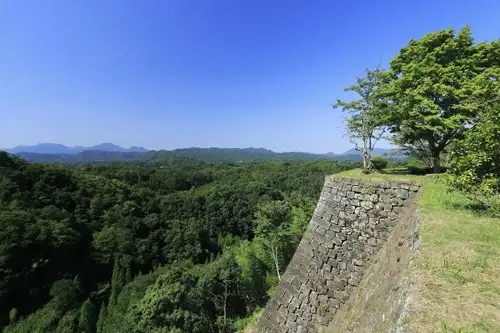
Sights
Gani Yu
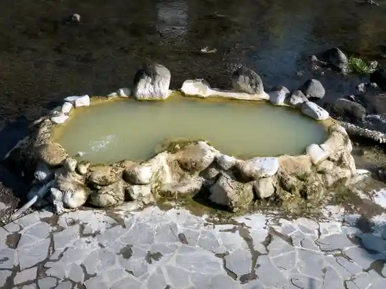
Yama Baths Kazuyo
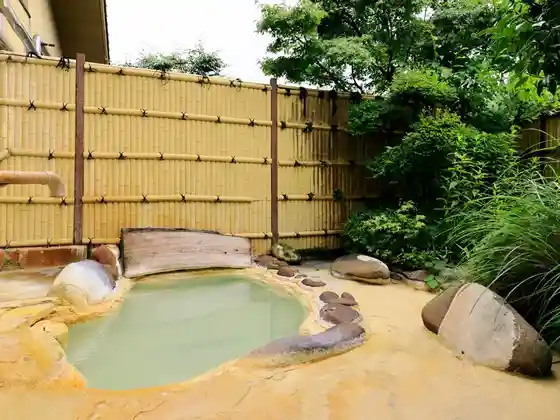
Ryokan Naka Village Ya
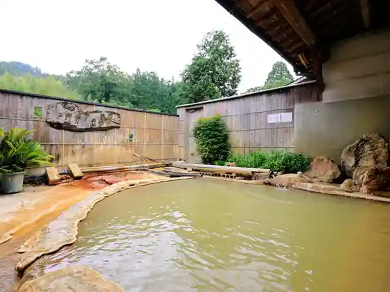
Hito Naga Baths
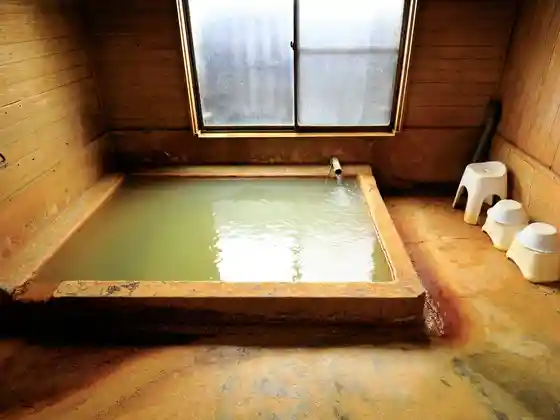
Enkei Bunsui (Enkeibunsui) Sobo Kei Okuzure Yunesukoeko Park no Midokoro
Sobo Kei Okuzure Yunesukoeko Park no Midokoro Kamihara (Kobaru) Tozanguchi
Sobo Kei Okuzure Yunesukoeko Park no Midokoro Oka Castle Ruins (Okajoato)
Ramune Onsen Kan
Kyushu Orure Oku Bungo Kosu
Kyushu Orure
SPA Naoiri
Ogi Mori Inari Shrine (Kotosama)
Kuju Hana Park
Roadside Station Sugo
Nagayu Onsen Kajika Iori
Suijin Yuki Mori
Nagayu Onsen Bansho Baths
Onsen Ryoyo Bunka Kan Omae Yu
Nyagayun Onsen
Kua Park Nagayu
Nagayu Onsen Shidare Sakura Village
Taketa Sosei Kan (Buke Yashiki Tori)
Nagayu Onsen Ryoyo Bunka Kan (Omae Yu (Gozenyu))
Yuya Amane (Amane)
Akagawa Onsen Akagawa So
Ganjii Ranch
Kuju Mizu Senkyo Chi Biiru Village
Kokoperi Uesutan Raidingu
Aizen Do (Aizendo)
Oka Castle Ruins
Oka Shiro Tennen Onsen Gatsu no Shizuku
Kyu Taketa So
Aotake Workshop Kiriyama / Kogei Gyararii kiriyama
Yagai Gekijo TAO no Oka
Taki Rentaro Memorial Museum
Atosupesukafe Okura Shimizu Yu
Kuju Wainarii Resutoran Ishigama Workshop
Kuju Kogen Gorufu Kurabu
Taketa Rekishi Bunka Kan Yu Gakkan
Taketa Onsen Kasui Gatsu
Nanatsu Mori Burial Mound no Higan Hana
Kua Park Nagayu
Kuju Highlands
Ozu Ryu Yusui Mizu no Eki Ozuru
Sato no Eki Ogi no Sato Onsen
Sobo Kei Okuzure Yunesukoeko Park no Midokoro Kamihara (Kobaru) Gorge
Yudokoro Yu no Hana (Kajika Iori)
Bungo Kutami Onsen Hotei Baths
Shichiri Ta Onsen Kan Ki no Ha Baths
Shigin Museum Fukada Hikari Rei Kinen (Shi Koe Kan)
Paru Club Daichi no Yu
Insen Ba COLONADE
Kuju Kogen Koteji (Manten Bo Onsen)
Taketa Ekimae Hosuteru Cue
Kuju Wainarii
Kirishitan Cave (Kirishitandokutsu) Reihaido Ato
Shirozu Falls
Sato Yoshimi Memorial Museum
Rentaro Tonneru
Hirose Shrine
Entsu Kaku
Kannon Tera Juroku Rakan
Ro no Yusui
Rekishi no Michi
Hachiman Kawa Alley (Shiho Ya no Tori)
Bo Gatsuru Marsh
Izumi Yusui
Roadside Station Taketa
Sasa Mu Tamizu Michi Hashi
Shiro Hara Shrine
Kawauda (Kawauda) Yusui
Kuwahata Yusui
Safurangohan
no Ike (no Ike) Park
Kiyotaki
Serikawa Dam (Serikawa Damu Park)
Ana Mori Shrine
Kamihara Keikoku Bridge
Mikazuki Iwa (Taketa Takigino)
Oka Hanshu Otamaya Park
Yutaka Oto Tera (Yamato)
Iwato Hashi
Shirozu Falls no Yusui
Inaba Kawa Yasuragi Park (Miyase Hashi)
Miyase Hashi
Sato Yoshimi Park (Sato Yoshimi Seika Atochi)
Nagaono (Shioi) Yusui
Yahara Yusui
Taketa Dam (Uozumi Dam)
Ki Ushi Falls (Ameushi no Taki)
Yahatayama Inochi Mizu Enmei Jizo Mikoto (Pokkuri Jizo)
Murasaki Shrine Murasaki Hachiman Sha (Murasakihachimansha)
Maruyama Park
Akimasa I Michi Daiichi Kyo Ishibashi (Roku Ren Suiro Hashi)
Sawamizu (Somi) Viewpoint Tokoro
Sobo Yama
Shiho Ya Kura (Hachiman Kawa Alley)
Himeno Ichiro Shoten
Ofuna Yama
Ote Monzeki
Nishinaka Shikiri Ato
Kumazawa Banzan Kensho Hi
Sorai Ko Ato
Taki Rentaro Dozo
Kojo no Gatsu Kahi Mae
Nakagawa Kaku Zaemon Yashikiato
Kin Ko Monzeki
Sogawa (Sokawa) no Chujo Setsuri
Magumagurasusutajio
Taketa Yakusho
Dining
焼肉 陽はまたのぼる
Yakiniku You Hamatanoboru
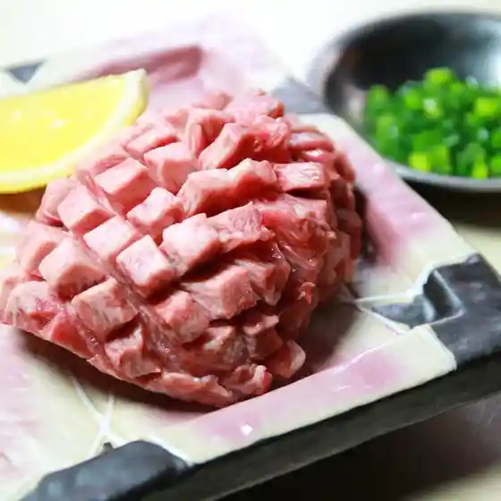
陽はまたのぼる 竹田本店
You Hamatanoboru Takeda Honten
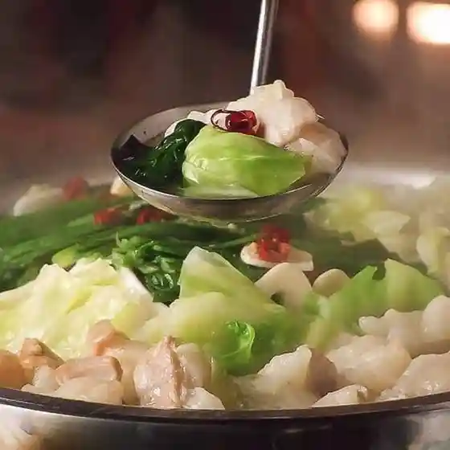
しゃも料理 鶏家
Shamo Ryouri Niwatori Ie
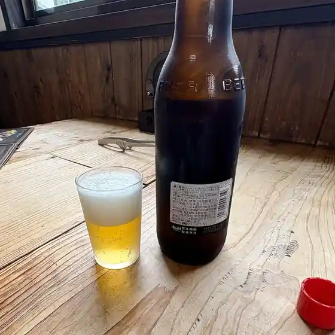
大丸旅館
Daimaru Ryokan
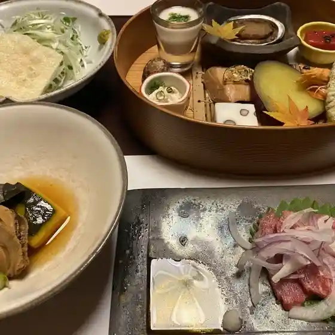
nageia coffee
Nageia Coffee
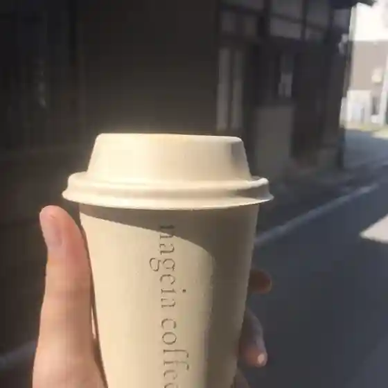
タビノトチュウ
Tabinotochuu
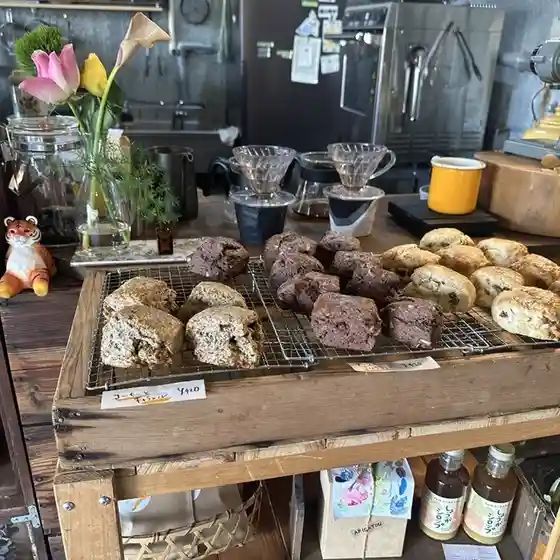
お食事処 ますみ
O Shokuji Tokoro Masumi
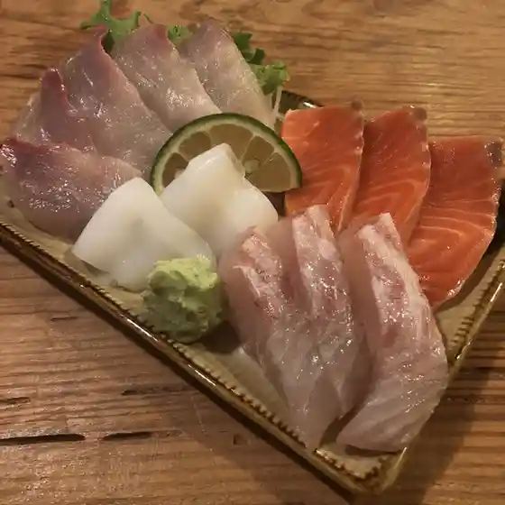
Cafe SlowBeat
Cafe Slowbeat
友修
Tomoshuu
cocochi
Cocochi
丸福本店
Marufuku Honten
ドライブイン みうら
Doraibuin Miura
すごう丸福
Sugou Marufuku
心笑庵
Kokoro Warai Iori
お食事処桜瀬
O Shokuji Tokoro Sakura Se
かどぱん
Kadopan
ガニ湯本舗 天風庵
Gani Yumoto Ho Tenpuu Iori
紅葉館
Kouyou Kan
ぽかぽか食堂
Pokapoka Shokudou
田舎食改革第1弾 嗚呼 隼 本店
Inaka Shoku Kaikaku Dai 1 Dan Aa Hayabusa Honten
モルカフェ
Morukafe
サリモス
Sarimosu
GRILLED BURGERS RAICHIKU
Grilled Burgers Raichiku
cafe＆gallery＆studio Hi! yoriyo
Cafe & Gallery & Studio Hi ! Yoriyo
よしおか
Yoshioka
民宿 くじら
Minshuku Kujira
アートスペースカフェ大蔵清水湯
Aatosupeesukafe Ookura Shimizu Yu
料庵 川瀬美
Ryou Iori Kawase Bi
人形工房かじか
Ningyou Koubou Kajika
たけた駅前ホステル cue
Taketa Ekimae Hosuteru Cue
花水月丸福
Kasui Gatsu Marufuku
とまり木
Tomari Ki
干潟ベーカリー
Higata Beekarii
Halelea
Halelea
Spaju
Spaju
カフェカプリセス
Kafekapurisesu
亀福
Kame Fuku
丸長旅館
Maru Nagatabi Kan
まんじゅうハウス
Manjuu Hausu
ピットイン
Pittoin
但馬屋老舗 本店
Tajima Ya Shinise Honten
小道具 三桁
Kodougu Sanketa
きのこⅡ世号
Kinoko Ⅱ Yo Gou
法華院温泉山荘
Hokke In Onsen Sansou
空
Sora
赤川荘
Akagawa Sou
くるみ食堂
Kurumi Shokudou
お菓子の菊家 竹田玉来店
O Kashi No Kiku Ie Takeda Tama Raiten
久住高原コテージ
Kujuu Kougen Koteeji
さふらんごはん
Safurangohan
久住高原カフェ&ギャラリー ミズシノモリ
Kujuu Kougen Kafe &Amp; Gyararii Mizushinomori
長湯バルねはんや
Nagayu Baru Nehanya
ジプシースマイル
Jipushiisumairu
水の駅 おづる丸福
Mizu No Eki Ozuru Marufuku
肉まる弁当
Niku Maru Bentou
キップス
Kippusu
民宿城山
Minshuku Shiroyama
白丹屋
Shirani Ya
民宿 清流
Minshuku Seiryuu
天恵塾食堂
Tenkei Juku Shokudou
Taketa Marufuku Taketa Oita Prefecture Kyushu
Taketa Marufuku Taketa Oita Prefecture Kyushu
Taketa Marufuku Taketa Oita Prefecture Kyushu
Taketa Marufuku Taketa Oita Prefecture Kyushu
Taketa Marufuku Taketa Oita Prefecture Kyushu
Taketa Marufuku Taketa Oita Prefecture Kyushu
Taketa Marufuku Taketa Oita Prefecture Kyushu
Taketa Marufuku Taketa Oita Prefecture Kyushu
Hinode Shokudo Taketa Oita Prefecture Kyushu
Hinode Shokudo Taketa Oita Prefecture Kyushu
Hinode Shokudo Taketa Oita Prefecture Kyushu
Hinode Shokudo Taketa Oita Prefecture Kyushu
Hinode Shokudo Taketa Oita Prefecture Kyushu
Hinode Shokudo Taketa Oita Prefecture Kyushu
Hinode Shokudo Taketa Oita Prefecture Kyushu
Hinode Shokudo Taketa Oita Prefecture Kyushu
Yusuichaya Taketa Oita Prefecture Kyushu
Yusuichaya Taketa Oita Prefecture Kyushu
Yusuichaya Taketa Oita Prefecture Kyushu
Yusuichaya Taketa Oita Prefecture Kyushu
Yusuichaya Taketa Oita Prefecture Kyushu
Yusuichaya Taketa Oita Prefecture Kyushu
Yusuichaya Taketa Oita Prefecture Kyushu
Yusuichaya Taketa Oita Prefecture Kyushu
Tajimayarouho Honten Taketa Oita Prefecture Kyushu
Tajimayarouho Honten Taketa Oita Prefecture Kyushu
Tajimayarouho Honten Taketa Oita Prefecture Kyushu
Tajimayarouho Honten Taketa Oita Prefecture Kyushu
Tajimayarouho Honten Taketa Oita Prefecture Kyushu
Tajimayarouho Honten Taketa Oita Prefecture Kyushu
Tajimayarouho Honten Taketa Oita Prefecture Kyushu
Tajimayarouho Honten Taketa Oita Prefecture Kyushu
Organic Food Buffet Restaurant Nono Yasai Taketa Oita Prefecture Kyushu
Organic Food Buffet Restaurant Nono Yasai Taketa Oita Prefecture Kyushu
Organic Food Buffet Restaurant Nono Yasai Taketa Oita Prefecture Kyushu
Organic Food Buffet Restaurant Nono Yasai Taketa Oita Prefecture Kyushu
Organic Food Buffet Restaurant Nono Yasai Taketa Oita Prefecture Kyushu
Organic Food Buffet Restaurant Nono Yasai Taketa Oita Prefecture Kyushu
Organic Food Buffet Restaurant Nono Yasai Taketa Oita Prefecture Kyushu
Organic Food Buffet Restaurant Nono Yasai Taketa Oita Prefecture Kyushu
Kujuu Winery Ishigama Studio Taketa Oita Prefecture Kyushu
Kujuu Winery Ishigama Studio Taketa Oita Prefecture Kyushu
Kujuu Winery Ishigama Studio Taketa Oita Prefecture Kyushu
Kujuu Winery Ishigama Studio Taketa Oita Prefecture Kyushu
Kujuu Winery Ishigama Studio Taketa Oita Prefecture Kyushu
Kujuu Winery Ishigama Studio Taketa Oita Prefecture Kyushu
Kujuu Winery Ishigama Studio Taketa Oita Prefecture Kyushu
Kujuu Winery Ishigama Studio Taketa Oita Prefecture Kyushu
Restaurant Meteo Taketa Oita Prefecture Kyushu
Restaurant Meteo Taketa Oita Prefecture Kyushu
Restaurant Meteo Taketa Oita Prefecture Kyushu
Restaurant Meteo Taketa Oita Prefecture Kyushu
Restaurant Meteo Taketa Oita Prefecture Kyushu
Restaurant Meteo Taketa Oita Prefecture Kyushu
Restaurant Meteo Taketa Oita Prefecture Kyushu
Restaurant Meteo Taketa Oita Prefecture Kyushu
Taketa Marufuku Taketa Oita Prefecture Kyushu
Taketa Marufuku Taketa Oita Prefecture Kyushu
Taketa Marufuku Taketa Oita Prefecture Kyushu
Taketa Marufuku Taketa Oita Prefecture Kyushu
Tomoshu Taketa Oita Prefecture Kyushu
Tomoshu Taketa Oita Prefecture Kyushu
Tomoshu Taketa Oita Prefecture Kyushu
Tomoshu Taketa Oita Prefecture Kyushu
Tomoshu Taketa Oita Prefecture Kyushu
Tomoshu Taketa Oita Prefecture Kyushu
Tomoshu Taketa Oita Prefecture Kyushu
Tomoshu Taketa Oita Prefecture Kyushu
Tomoshu Taketa Oita Prefecture Kyushu
Tomoshu Taketa Oita Prefecture Kyushu
Tomoshu Taketa Oita Prefecture Kyushu
Tomoshu Taketa Oita Prefecture Kyushu
Champi Taketa Oita Prefecture Kyushu
Champi Taketa Oita Prefecture Kyushu
Champi Taketa Oita Prefecture Kyushu
Champi Taketa Oita Prefecture Kyushu
Champi Taketa Oita Prefecture Kyushu
Champi Taketa Oita Prefecture Kyushu
Champi Taketa Oita Prefecture Kyushu
Champi Taketa Oita Prefecture Kyushu
Stay
御宿割烹 一竹
Onjuku Kappou Itchiku
ホテル つちや
Hoteru Tsuchiya
トラベルイン吉富
Toraberuin Yoshitomi
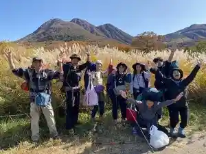
たけた駅前ホステルｃｕｅ
Taketa Ekimae Hosuteru C U E
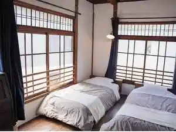
竹田まちホテル
Takeda Machi Hoteru
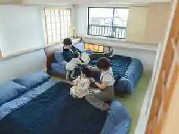
岡の里 旅籠 塩屋
Oka No Sato Hatago Shioya
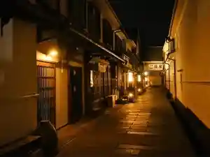
里の宿 門後藤
Sato No Yado Mon Gotou
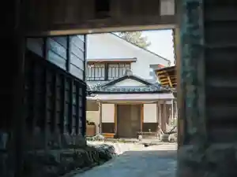
ホテル岩城屋
Hoteru Iwaki Ya
水神之森
Suijin Yuki Mori
山の湯 かずよ
Yama No Yu Kazuyo
長湯温泉 かじか庵
Nagayu Onsen Kajika Iori
ガニ湯本舗天風庵
Gani Yumoto Ho Tenpuu Iori
クアパーク長湯
Kuapaaku Nagayu
長湯温泉 大丸旅館
Nagayu Onsen Daimaru Ryokan
丸長旅館
Maru Nagatabi Kan
長湯 渓の舎
Nagayu Kei No Sha
万象の湯 湯治場棟
Banshou No Yu Touji Ba Tou
Ｂ・Ｂ・Ｃ長湯 長期滞在施設と林の中の小さな図書館
B ・ B ・ C Nagayu Choukitaizai Shisetsu To Hayashi No Nakano Chiisa Na Toshokan
長湯温泉 やすらぎの宿 かどやRe
Nagayu Onsen Yasuragino Yado Kadoya Re
長湯温泉 上野屋旅館
Nagayu Onsen Ueno Ya Ryokan
御宿 友喜美荘
Onjuku Tomoki Bi Sou
宿房 翡翠之庄～Ｔｈｅ Ｋｉｎｇｆｉｓｈｅｒ ｒｅｓｏｒｔ～
Shukubou Hisui Yuki Shou ~ T H E K I N G F I S H E R R E S O R T ~
民宿 城山
Minshuku Shiroyama
フリューゲル久住
Furyuugeru Kujuu
荻の里温泉
Ogi No Sato Onsen
オーベルジュ・コヤマ
Ooberuju・Koyama
自然を五感で楽しむリゾートホテル レゾネイトクラブくじゅう
Shizen Wo Gokan De Tanoshi Mu Rizootohoteru Rezoneitokurabu Kujuu
レゾネイトグランピング 星の丘
Rezoneitoguranpingu Hoshi No Oka
くじゅう花公園キャンピングリゾート花と星
Kujuu Hana Kouen Kyanpingurizooto Hana To Hoshi